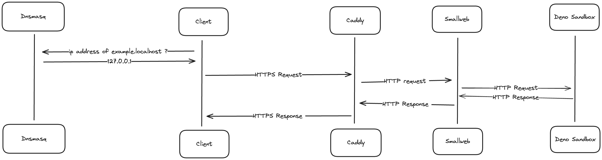
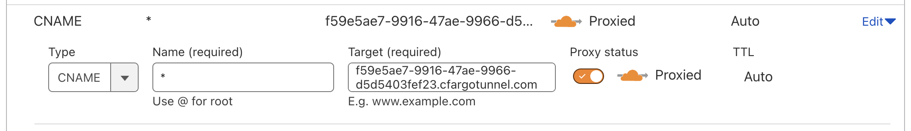

Getting started
Why Smallweb?
Smallweb maps each folder in ~/www folder to an unique domain. Ex: ~/www/example will be mapped to:
https://example.localhoston your local devicehttps://example.<your-domain>on your homelab / VPS
Creating a new website becomes as simple a creating a folder and opening the corresponding url in your browser. No need to configure a build step, or start a development server. And since servers are mapped to folders, you can manage them using standard unix tools like cp, mv or rm.
Every http request is sandboxed in a single deno subprocess by the smallweb evaluation server. If there is no activity on your website, no resources will be used on your server, making it a great solution for low-traffic websites.
Installation
If you want your apps to be available on the internet, you'll need to buy a domain name, and point it to your server. You can find more information on to do this in the Cloudflare Tunnel setup guide.
If you prefer your to keep your apps local to your device, you can learn how to host your apps as https://<app>.localhost address in this guide. This option does not requires a domain name (or a server), but your app will only be available on your local device.
This guide will assumes that you have followed the localhost setup guide. If you haven't, just replace https://<app>.localhost with https://<app>.<your-domain> in the examples below.
Hosting a web app
Every folder in the ~/www directory is served statically by default. If the folder contains an index.html file, it will be served as the default page. Otherwise, the folder content will be listed.
To create a new website, just create a folder in the ~/www directory, and add an index.html file in it.
<!-- File: ~/www/example-website/index.html -->
<!DOCTYPE html>
<html lang="en">
<head>
<meta charset="UTF-8">
<meta name="viewport" content="width=device-width, initial-scale=1.0">
<title>Smallweb - Host websites from your internet folder</title>
<link href="https://cdnjs.cloudflare.com/ajax/libs/tailwindcss/2.2.19/tailwind.min.css" rel="stylesheet">
</head>
<body class="bg-white flex items-center justify-center min-h-screen text-black">
<div class="border-4 border-black p-10 text-center">
<h1 class="text-6xl font-extrabold mb-4">Smallweb</h1>
<p class="text-2xl mb-6">Host websites from your internet folder</p>
</div>
</body>
</html>
To access the website, open https://example-website.localhost in your browser.
If you want to serve dynamic content instead, you'll need to create a file called main.[js,ts,jsx,tsx] at the root of the folder. The file should export a default object with a fetch method that takes a Request object as argument, and returns a Response object.
// File: ~/www/example-server/main.ts
export default {
fetch(request: Request) {
const url = new URL(request.url);
const name = url.searchParams.get("name") || "world";
return new Response(`Hello, ${name}!`, {
headers: {
"Content-Type": "text/plain",
},
});
},
}
To access the server, open https://example-server.localhost in your browser.
Smallweb use the deno runtime to evaluate the server code. You get typescript and jsx support out of the box, and you can import any module from the npm and jsr registry by prefixing the module name with npm: or jsr:.
As an example, the following code snippet use the @hono/hono extract params from the request url, and render jsx:
// File: ~/www/hono-example/main.tsx
/** @jsxImportSource jsr:@hono/hono/jsx **/
import { Hono } from "@hono/hono";
const app = new Hono();
app.get("/", c => c.html(<h1>Hello, world!</h1>));
app.get("/:name", c => c.html(<h1>Hello, {c.req.param("name")}!</h1>));
export default app;
No need to start a development server, or to compile the code. Smallweb will take care of everything for you.
You can just copy paste this code at ~/www/hono-example/main.tsx, and open https://hono-example.localhost in your browser. The first load might take a few seconds, since deno is downloading the required modules, but subsequent loads will be instantaneous.
Setting env variables
You can set environment variables for your app by creating a file called .env in the application folder.
Here is an example of a .env file:
BEARER_TOKEN=SECURE_TOKEN
Use the Deno.env.get method to access the environment variables in your app:
// File: ~/www/demo/main.ts
export default function (req: Request) {
if (req.headers.get("Authorization") !== `Bearer ${Deno.env.get("BEARER_TOKEN")}`) {
return new Response("Unauthorized", { status: 401 });
}
return new Response(`I'm private!`, {
headers: {
"Content-Type": "text/plain",
},
});
}
If you want to set an environment variable for all your apps, you can create a .env file in the ~/www directory.
Configuring permissions
By default, a smallweb app can:
- read and write the current directory
- access environment variables using
Deno.env.get - access the network with
fetch
If you want to add more permissions to your app (or restrict it even further), you can either:
- add
smallweb.jsonconfiguration file at the root of the folder - add a
smallwebfield in yourdeno.json
A json schema for the permissions file is available here. See the deno docs to learn the available permissions.
Here is the default config when no smallweb.json file is present:
{
"$schema": "https://static.pomdtr.me/smallweb.schema.json",
"permissions": {
"env": true,
"net": true,
"read": ["."],
"write": {
"allow": ["."],
"deny": [ "smallweb.json", "smallweb.jsonc", "deno.json", "deno.jsonc"]
}
}
}
If you want to add permissions to run a binary, you should start from it, then add the required permissions:
{
"$schema": "https://static.pomdtr.me/smallweb.schema.json",
"permissions": {
"run": ["/opt/homebrew/bin/gh"], // add the ability to run the gh binary
"env": true,
"net": true,
"read": ["."],
"write": {
"allow": ["."],
"deny": [ "smallweb.json", "smallweb.jsonc", "deno.json", "deno.jsonc"]
}
}
}
As a general rule, you should only add permissions that are required for your app to run. The more permissions you add, the more attack surface you expose to potential attackers. If you know what you are doing (or just don't care), you can allow all permissions by setting the all field to true.
{
"$schema": "https://static.pomdtr.me/smallweb.schema.json",
"permissions": {
"all": true // yolo!
}
}
Registering a CLI command
To add a cli command to your app, just create a file called cli.[js,ts,jsx,tsx] in the folder.
Here is an example of a simple cli command:
// File: ~/www/demo/cli.ts
import { parseArgs } from "jsr:@std/cli/parse-args";
const flags = parseArgs(Deno.args, {
string: ["name"],
});
console.log(`Hello, ${flags.name || "world"}!`);
To run the command, you can use the smallweb run command:
$ smallweb run demo --name smallweb
Hello, smallweb!
Of course, you can define both an main.ts and a cli.ts file in the same folder.
This page will guide you through the process of setting up your local environment for smallweb on MacOS.
At the end of this process, each folder in ~/www will be mapped to domain with a .localhost suffix. For example, the folder ~/www/example will be accessible at https://example.localhost.
This setup is useful for developing and testing smallweb apps locally, without having to deploy them to the internet.
If you want to expose your apps to the internet instead, you can follow the Cloudflare Tunnel setup guide.
Architecture
The following diagram illustrates the architecture of the local setup:

The components needed are:
- a dns server to map
.localhostdomains to127.0.0.1ip address (dnsmasq) - a reverse proxy to automatically generate https certificates for each domain, and redirect traffic to the smallweb evaluation server (caddy)
- a service to map each domain to the corresponding folder in ~/www, and spawn a deno subprocess for each request (smallweb)
- a runtime to evaluate the application code (deno)
Installation
In the future, we might provide a script to automate this process, but for now, it's a manual process.
Install Brew (required to install smallweb, deno, caddy, and dnsmasq)
We'll use brew to install the required tools. If you don't have brew installed, you can run the following command:
/bin/bash -c "$(curl -fsSL https://raw.githubusercontent.com/Homebrew/install/HEAD/install.sh)"
Install Deno (required to run smallweb apps)
# using brew
brew install deno go
Install smallweb, and register it as a service
git clone https://github.com/pomdtr/smallweb
cd smallweb && go install
echo "export PATH=$PATH:$(go env GOPATH)/bin" >> ~/.zshrc
smallweb service install
Download the lastest version of smallweb from the github releases, and extract the smallweb binary to your $PATH.
Install Caddy (redirect *.localhost to localhost:7777)
# Install caddy
brew install caddy
# Write caddy configuration
cat <<EOF > /opt/homebrew/etc/Caddyfile
*.localhost {
tls internal {
on_demand
}
reverse_proxy localhost:7777
}
EOF
# Run caddy in the background
brew services start caddy
# Add caddy https certificates to your keychain
caddy trust
mkdir -p ~/www
# Indicate to deno to use the keychain for tls certificates
echo "DENO_TLS_CA_STORE=system" >> ~/www/.env
Install dnsmasq (map *.localhost address to 127.0.0.1)
# Install dsnmasq
brew install dnsmasq
# Write dnsmasq configuration
echo "address=/.localhost/127.0.0.1" >> /opt/homebrew/etc/dnsmasq.conf
# Run dnsmasq in the background
sudo brew services start dnsmasq
# Indicates to the system to use dnsmasq for .localhost domains
sudo mkdir -p /etc/resolver
cat <<EOF | sudo tee -a /etc/resolver/localhost
nameserver 127.0.0.1
EOF
Testing the local setup
First, let's create a dummy smallweb website:
mkdir -p ~/www/example
CAT <<EOF > ~/www/example/main.ts
export default {
fetch() {
return new Response("Smallweb is running", {
headers: {
"Content-Type": "text/plain",
},
});
}
}
EOF
If everything went well, you should be able to access https://example.localhost in your browser, and see the message Smallweb is running.
Cloudflare Tunnel is a free service that allows you to expose your local server to the internet, without having to expose your local IP address.
Additionally, it provides some protection against DDoS attacks, and allows you to use Cloudflare's other services like Access.
Setup
-
Make sure that you have a domain name that you can manage with Cloudflare.
-
Install smallweb on your server, and register it as a service.
git clone https://github.com/pomdtr/smallweb cd smallweb && go install smallweb service install -
From your cloudflare dashboard, navigate to
Zero Trust > Networks > Tunnels -
Click on
Create a tunnel, and select theClouflaredoption -
Follow the intructions to install cloudflared, and create a connector on your device.
-
Add a wildcard hostname for your tunnel (ex:
*.<your-domain>), and usehttp://localhost:7777as the origin service.
-
Copy the tunnel ID, and go to
Websites > DNS > Records. -
Add a new
CNAMErecord for your wildcard hostname, with a target of<tunnel-id>.cfargotunnel.com.
Checking that your tunnel is running
Create a dummy smallweb app in ~/www
mkdir -p ~/www/example
CAT <<EOF > ~/www/example/main.ts
export default {
fetch() {
return new Response("Smallweb is running", {
headers: {
"Content-Type": "text/plain",
},
});
}
}
EOF
If everything went well, you should be able to access https://example.localhost in your browser, and see the message Smallweb is running.
Optional Steps
- You can protect your tunnel (or specific apps) with Cloudflare Access.
Hosting Smallweb on fly.io
git clone https://github.com/pomdtr/smallweb
fly launch --no-deploy
fly deploy
fly certs create '<your-domain>' # Optional, might be used in the future
fly certs create '*.<your-domain>'
Then add the required dns entries to your domain registrar.

The certificate might take a long time to be issued (~30 mins in my experience).
You can check the status of the certificates by running fly certs show '*.<your-domain>'.
Testing the setup
Create a dummy website:
fly ssh console
mkdir -p /www/example
CAT <<EOF > /www/example/main.ts
export default {
fetch() {
return new Response("Smallweb is running on fly.io", {
headers: {
"Content-Type": "text/plain",
},
});
}
}
EOF
Then go to https://example.<your-domain>.
You can access the smallweb logs by running: fly logs in the smallweb directory, or fly logs -a smallweb from anywhere.
Deno Deploy
If one of your websites is starting to get a lot of traffic, you might want to deploy it to a cloud provider.
Deno Deploy is a cloud platform that allows you to deploy your Deno apps with ease. It's a great choice for smallweb apps, since it's built on top of Deno, and it's very easy to use.
To deploy an app, you'll just need to:
-
Install the
deployctlcli:deno install -Arf jsr:@deno/deployctl -
Run
deployctl deploy, and follow the instructions.
Beware, all Deno APIs are not available in Deno Deploy. For example, you won't be able to write files to the filesystem.
Val Town
Val Town is a social website to write and deploy TypeScript.
Val Town and Smallweb can easily interop. For example, to use an http val in smallweb, you can use the following snippet:
// Assuming that the val export a handler function
import handler from "https://esm.town/v/<username>/<val>"
export default {
fetch: handler,
};
You can also go the other way around. A great way to achieve this is to push you smallweb app to a github repository, and use the raw url to import the app in Val Town.
import handler from "https://raw.githubusercontent.com/<username>/<repo>/<branch>/mod.ts"
export default handler
You can also push reusable block to JSR, and access them from both Val Town and Smallweb.
CLI Reference
smallweb
Host websites from your internet folder
Options
-h, --help help for smallweb
smallweb completion
Generate the autocompletion script for the specified shell
Synopsis
Generate the autocompletion script for smallweb for the specified shell. See each sub-command's help for details on how to use the generated script.
Options
-h, --help help for completion
smallweb completion bash
Generate the autocompletion script for bash
Synopsis
Generate the autocompletion script for the bash shell.
This script depends on the 'bash-completion' package. If it is not installed already, you can install it via your OS's package manager.
To load completions in your current shell session:
source <(smallweb completion bash)
To load completions for every new session, execute once:
Linux:
smallweb completion bash > /etc/bash_completion.d/smallweb
macOS:
smallweb completion bash > $(brew --prefix)/etc/bash_completion.d/smallweb
You will need to start a new shell for this setup to take effect.
smallweb completion bash
Options
-h, --help help for bash
--no-descriptions disable completion descriptions
smallweb completion fish
Generate the autocompletion script for fish
Synopsis
Generate the autocompletion script for the fish shell.
To load completions in your current shell session:
smallweb completion fish | source
To load completions for every new session, execute once:
smallweb completion fish > ~/.config/fish/completions/smallweb.fish
You will need to start a new shell for this setup to take effect.
smallweb completion fish [flags]
Options
-h, --help help for fish
--no-descriptions disable completion descriptions
smallweb completion help
Help about any command
Synopsis
Help provides help for any command in the application. Simply type completion help [path to command] for full details.
smallweb completion help [command] [flags]
Options
-h, --help help for help
smallweb completion powershell
Generate the autocompletion script for powershell
Synopsis
Generate the autocompletion script for powershell.
To load completions in your current shell session:
smallweb completion powershell | Out-String | Invoke-Expression
To load completions for every new session, add the output of the above command to your powershell profile.
smallweb completion powershell [flags]
Options
-h, --help help for powershell
--no-descriptions disable completion descriptions
smallweb completion zsh
Generate the autocompletion script for zsh
Synopsis
Generate the autocompletion script for the zsh shell.
If shell completion is not already enabled in your environment you will need to enable it. You can execute the following once:
echo "autoload -U compinit; compinit" >> ~/.zshrc
To load completions in your current shell session:
source <(smallweb completion zsh)
To load completions for every new session, execute once:
Linux:
smallweb completion zsh > "${fpath[1]}/_smallweb"
macOS:
smallweb completion zsh > $(brew --prefix)/share/zsh/site-functions/_smallweb
You will need to start a new shell for this setup to take effect.
smallweb completion zsh [flags]
Options
-h, --help help for zsh
--no-descriptions disable completion descriptions
smallweb docs
Generate smallweb cli documentation
smallweb docs [flags]
Options
-h, --help help for docs
smallweb dump
Print the smallweb app tree
smallweb dump [flags]
Options
-h, --help help for dump
smallweb help
Help about any command
Synopsis
Help provides help for any command in the application. Simply type smallweb help [path to command] for full details.
smallweb help [command] [flags]
Options
-h, --help help for help
smallweb run
Run a smallweb app cli
smallweb run <alias> [args...] [flags]
Options
-h, --help help for run
smallweb service
Manage smallweb service
Options
-h, --help help for service
smallweb service help
Help about any command
Synopsis
Help provides help for any command in the application. Simply type service help [path to command] for full details.
smallweb service help [command] [flags]
Options
-h, --help help for help
smallweb service install
Install smallweb as a service
smallweb service install [flags]
Options
-h, --help help for install
smallweb service log
Print service logs
smallweb service log [flags]
Options
-f, --follow Follow log output
-h, --help help for log
smallweb service restart
Restart smallweb service
smallweb service restart [flags]
Options
-h, --help help for restart
smallweb service start
Start smallweb service
smallweb service start [flags]
Options
-h, --help help for start
smallweb service status
View service status
smallweb service status [flags]
Options
-h, --help help for status
smallweb service stop
Stop smallweb service
smallweb service stop [flags]
Options
-h, --help help for stop
smallweb service uninstall
Uninstall smallweb service
smallweb service uninstall [flags]
Options
-h, --help help for uninstall
smallweb up
Start the smallweb evaluation server
smallweb up [flags]
Options
-h, --help help for up
-p, --port int Port to listen on (default 7777)